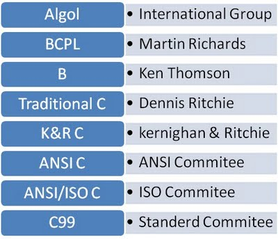

C (/ˈsiː/, as in the letter c) is a general purpose, imperative computer programming language, supporting structured programming, lexical variable scope and recursion, while a static type system prevents many unintended operations. By design, C provides constructs that map efficiently to typical machine instructions, and therefore it has found lasting use in applications that had formerly been coded in assembly language, including operating systems, as well as various application software for computers ranging from supercomputers to embedded systems.
C was originally developed by Dennis Ritchie between 1969 and 1973 at Bell Labs, and used to reimplement the Unix operating system. It has since become one of the most widely used programming languages of all time, with C compilers from various vendors available for the majority of existing computer architectures and operating systems. C has been standardized by the American National Standards Institute (ANSI) since 1989 (see ANSI C) and subsequently by the International Organization for Standardization (ISO)
C is an imperative procedural language. It was designed to be compiled using a relatively straightforward compiler, to provide lowlevel access to memory, to provide language constructs that map efficiently to machine instructions, and to require minimal run time support. Therefore, C was useful for many applications that had formerly been coded in assembly language, for example in system programming. Despite its low level capabilities, the language was designed to encourage cross platform programming. A standards compliant and portably written C program can be compiled for a very wide variety of computer platforms and operating systems with few changes to its source code. The language has become available on a very wide range of platforms, from embedded microcontrollers to supercomputers.
C has a formal grammar specified by the C standard. Line endings are generally not significant in C;
however, line boundaries do have significance during the preprocessing phase. Comments may appear either
between the delimiters /* and */, or (since C99) following // until the end of the line. Comments delimited by
/* and */ do not nest, and these sequences of characters are not interpreted as comment delimiters if they
appear inside string or character literals.
C source files contain declarations and function definitions. Function definitions, in turn, contain declarations
and statements. Declarations either define new types using keywords such as struct, union, and enum, or assign
types to and perhaps reserve storage for new variables, usually by writing the type followed by the variable
name. Keywords such as char and int specify builtin types. Sections of code are enclosed in braces ({ and },
sometimes called "curly brackets") to limit the scope of declarations and to act as a single statement for control
structures.
As an imperative language, C uses statements to specify actions. The most common statement is an expression
statement, consisting of an expression to be evaluated, followed by a semicolon; as a side effect of the
evaluation, functions may be called and variables may be assigned new values. To modify the normal
sequential execution of statements, C provides several control flow statements identified by reserved keywords.
Structured programming is supported by if(else) conditional execution and by do while, while, and for
iterative execution (looping). The for statement has separate initialization, testing, and reinitialization
expressions, any or all of which can be omitted. break and continue can be used to leave the innermost
enclosing loop statement or skip to its reinitialization. There is also a non structured goto statement which
branches directly to the designated label within the function. switch selects a case to be executed based on the
value of an integer expression.
Expressions can use a variety of built in operators and may contain function calls. The order in which
arguments to functions and operands to most operators are evaluated is unspecified. The evaluations may even
be interleaved. However, all side effects (including storage to variables) will occur before the next "sequence
point"; sequence points include the end of each expression statement, and the entry to and return from each
function call. Sequence points also occur during evaluation of expressions containing certain operators (&&, ||,
?: and the comma operator). This permits a high degree of object code optimization by the compiler, but
requires C programmers to take more care to obtain reliable results than is needed for other programming
languages.
Kernighan and Ritchie say in the Introduction of The C Programming Language: "C, like any other language,
has its blemishes. Some of the operators have the wrong precedence; some parts of the syntax could be
better."
The C standard did not attempt to correct many of these blemishes, because of the impact of such
changes on already existing software.
